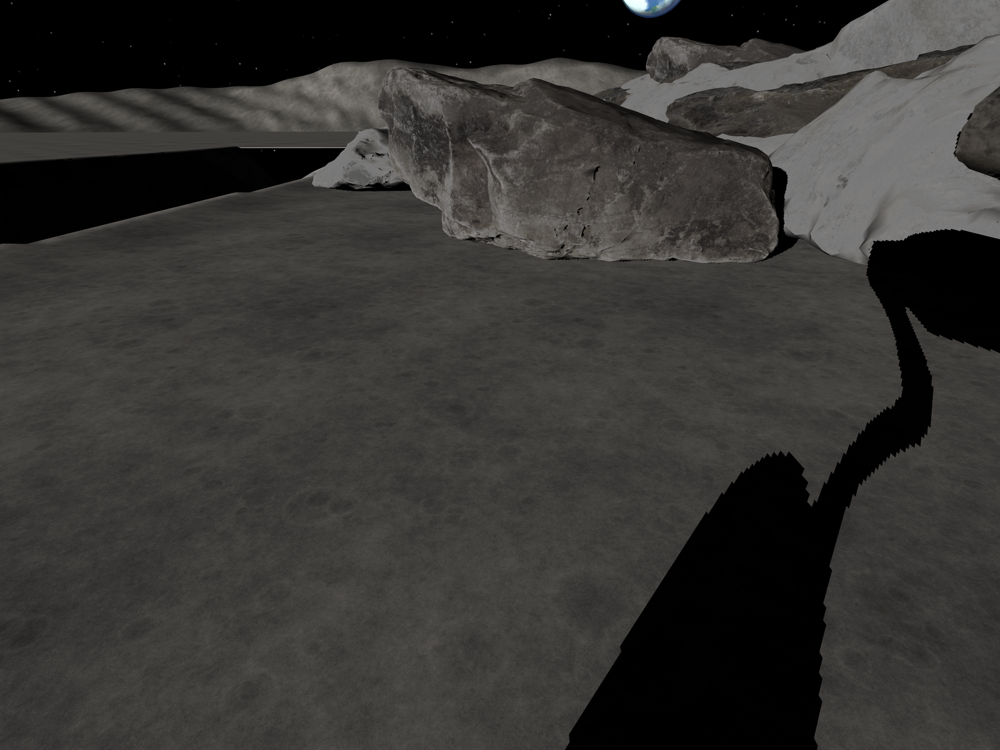
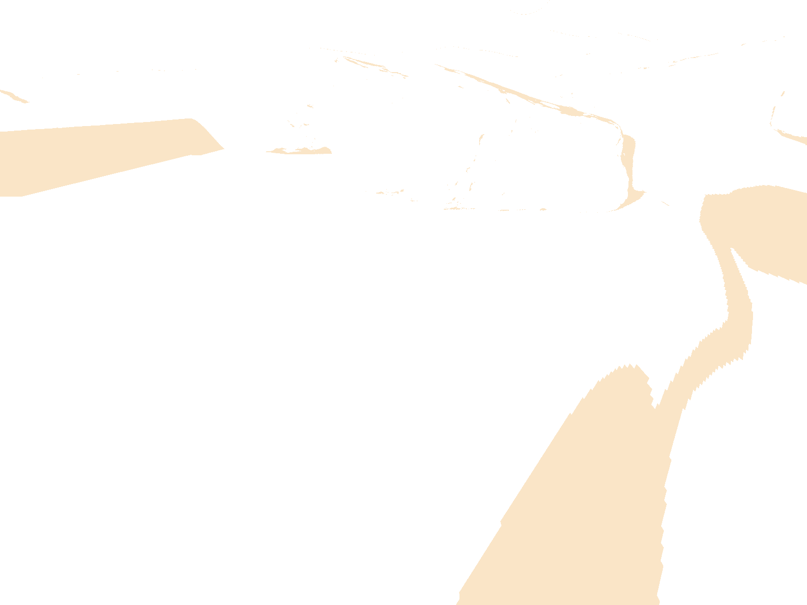
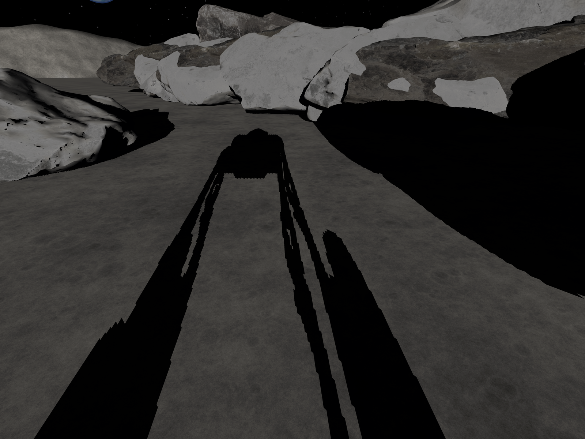
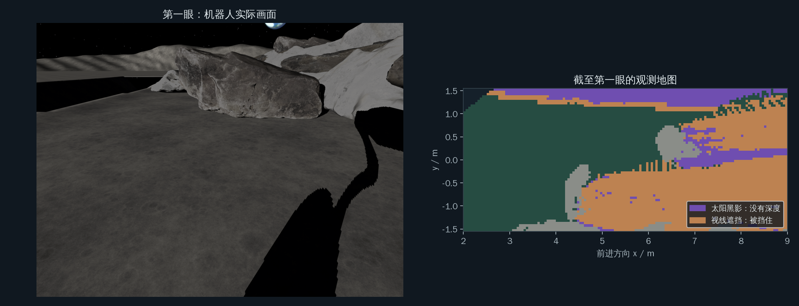
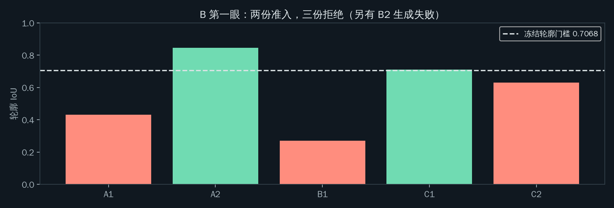
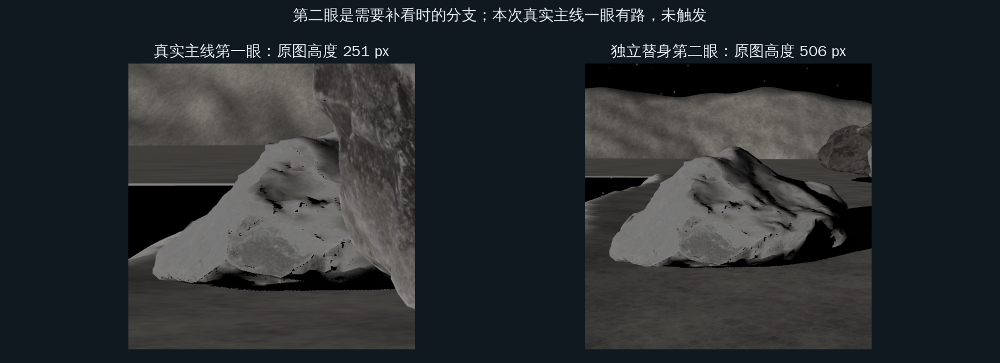
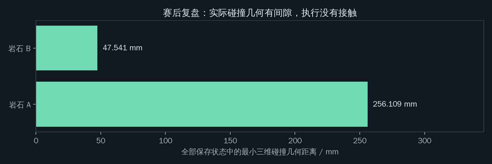
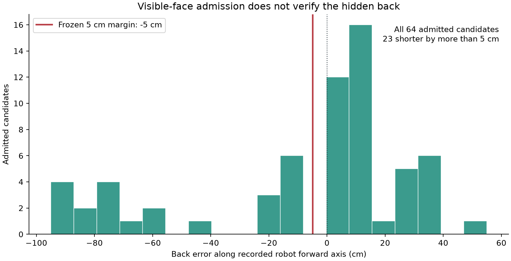
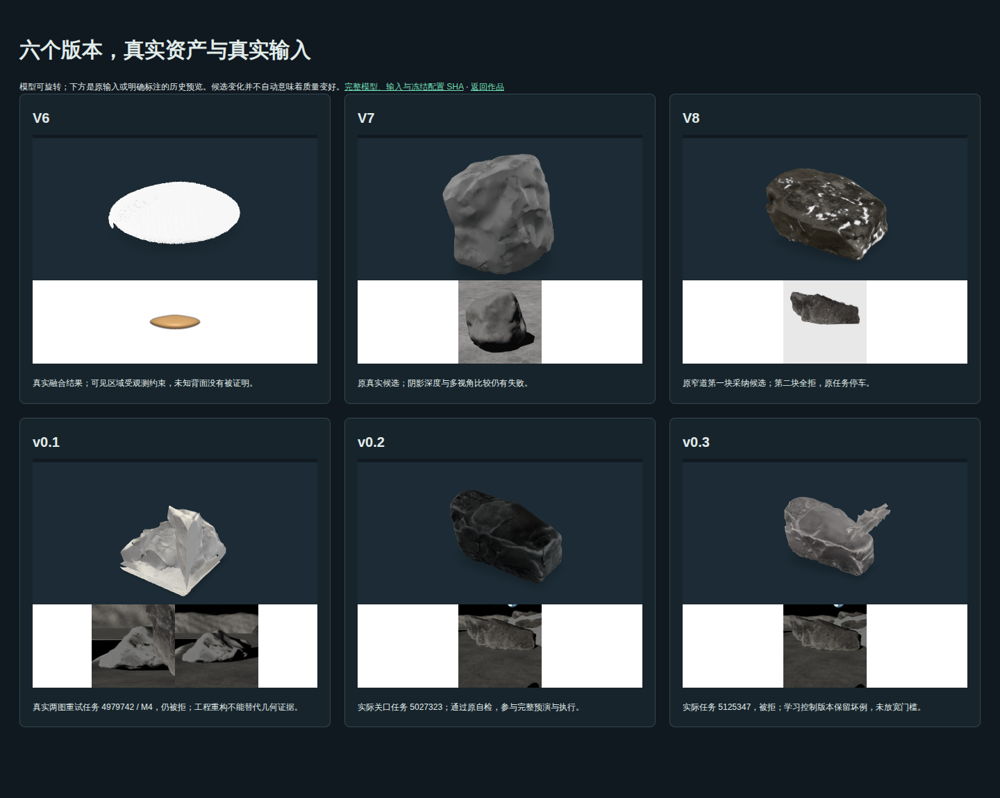
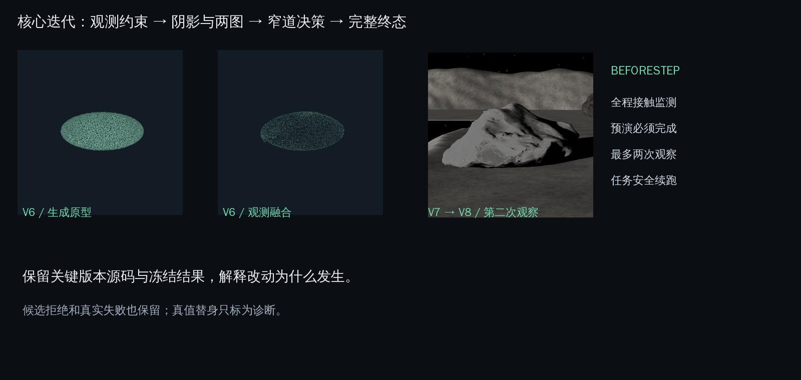

太阳的影子：移动相机，太阳不动。
这一栏固定保留首眼画面与它的实际 DARK 掩码作参考。换位置不会照亮太阳照不到的地方；DARK 分类本身也包含暗岩面，不能等同于纯几何阴影。
锚点场景中，想象车是三台车里唯一安全到达的；12 个预注册场景中，决定性 8 个：到达 3、安全停车 3、碰撞 2（原因已查明）。 查看原因 ↓
轮腿机器人只能看见岩石的一部分，却要判断身边的路。让 Lux3D 提出几何假设，用实际观测自检，在想象中完整预演，再到独立物理世界执行。
赛后修订曾有碰撞：suite_r2_v4_F1_003（包括早期 v2）。 查看各版结果与原因 ↓


先点一种策略，再看它的真实终态。四栏共享同一窄道、传感器与规则控制器；黑影测深是传感器对照。
自己选一条路，再揭晓 →逐眼回放与全部原记录 ↓这一栏固定保留首眼画面与它的实际 DARK 掩码作参考。换位置不会照亮太阳照不到的地方；DARK 分类本身也包含暗岩面，不能等同于纯几何阴影。

读取真实观测…
两张照片来自两个实际观察姿态。滑块切换已记录画面，没有虚构中间视角；下方地图同步切换为该眼的原始分类。
照不到的黑影里，相机没有可靠深度。换一个观察位置，也不能把那里照亮。
A 挡住身后的空间。移动相机能缩小遮挡，仍须检验背面的几何假设。

第一眼实际 RGB-D 与观测地图。主线使用原 A+B、原太阳、原起终点；黑影保持未知。
看机器人实际第一眼，选择直接走、多看几眼或想一想，再回放实际轨迹、翻看背面并记分。
进入完整关卡 →月溪不能进入，大石堆挡住右侧；A 在前，B 的后半截凸进车道。保持原终点 (10.5, 0)，让三种策略面对同一个问题。
| 同场景实验 | 结果 | 眼数 | 仿真总时长 |
|---|
橙线仅用可见观测与禁行先验，绿线加入真实 Lux3D 占据。R1 的乐观路线发生碰撞，想象路线完成预演后到达。
下面数字直接来自原结果和修订账本。生成与检查的原批以 R1/R2 为范围；修订单列，反事实按已知与留出分开。
机器人实际首眼与补看。太阳黑影与视线遮挡分别处理。
原 R1/R2 180 个唯一任务、166 份成功 GLB；R3 新增 120 个任务、113 份成功 GLB。
原批 64 份准入、102 份拒绝；只检验可见证据，不能保证背面。
原想象与赛后修订保持分开：修订只解释太阳黑影，视线未知仍阻塞。
每个采纳世界都以同一控制器走完整条路线，包含补看与最后转向。
原想象有 2 场碰撞；最终 v3 已知场景碰撞 0、留出碰撞 0。oldv2 的碰撞保留。
原批 17/102 碰撞；修订已知批 17 份、0 碰撞，留出批 112 份、13 碰撞。
 实际上传输入的网页预览
实际上传输入的网页预览| B 候选 | 任务 | 轮廓 IoU | 尺度比 | 结果与原因 |
|---|

需要补看时，朝向对准被拒目标，优先开得到、预计原图高度 ≥512 px 的位置。两眼都清楚才用两图，否则只用新视角；最多两批十二份，仍然零准入就停车。

本次真实B首眼251 px，native_ok=false，仍有A2、C1两份准入，一眼有路；第二眼、6b追加、§2.4替换均未真实触发。独立替身验证预计513.388 px、实际506 px，按单图分支完整到达。新第二眼规则与失败均有独立原始记录。
A 六份准入几何 × B 两份，共十二个物理预演。使用同一规则控制器，每格都完成且无碰撞，然后在独立扫描世界执行。
画廊显示各格实际保存轨迹。点击查看完整轨迹文件；原世界坐标网格、配置与状态均在仓库。
从每个保存姿态重建原物理几何，最小有符号距离为正，实际执行没有接触。
矩形包络与 B 的平面凸包相交。它是复盘近似，同时公开，不能当作实际三维接触。

二维中心距离减半车宽最小为 -0.062778 m；与二维包络间隙 0 同时报告。
原运行墙钟1223.6 s，含冷配准和预演、不含云端排队，不是端到端延迟。
完整重放再次完成十二格预演并到达，全部轨迹数组与原运行逐字节相同。采纳 B 的背面仍偏短，不把此次到达说成模型已经还原了真实背面。
查看轨迹摘要与重放核验 ↗按预注册逐一只信 B/A1、B/B1、B/C2，不挑选、不补看。三份都到达，碰撞数为 0/3；本批自检偏保守，未证明它挡住了碰撞。
| 只信的被拒 B | 实际终态 | 仿真总时长 |
|---|
可在上方“补充实验与全部反事实”中回放三次完整执行。生成失败的 B2 没有 GLB，单独保留，不冒充自检拒绝。
决定性：到达3、安全停车3、碰撞2；普通：到达3、停车1、碰撞0。全部拒绝反事实17/102碰撞；真实第二眼5次：1到达、4安全终止、0碰撞。
suite_r2_v4_F1_020、suite_r2_v4_F3_004
全部实际接触、复盘与失败原因在预注册结果总表中保留。
查看碰撞场景与原始运行身份 ↓想象策略实际发生碰撞：suite_r2_v4_F1_020、suite_r2_v4_F3_004。全部失败与复盘原因在总表公开。
场景组在任何本轮 Lux3D 结果之前冻结。选择只依据保守、see-dark、乐观和真实形状检验四次非 Lux 运行；各类别按种子从小到大取决定性与普通场景，stress_v8 直接使用已完成的 R1 锚点。冻结后不换场景、不放宽门槛、不迭代控制器。
原冻结 12 个场景，完成 12 个。未完成：无。
| 类别 | 候选数 | 决定性 | 普通 | 无解 | 未归类 | 执行错误 |
|---|---|---|---|---|---|---|
| F0 | 12 | 9 | 2 | 1 | 0 | 0 |
| F1 | 24 | 2 | 10 | 8 | 4 | 0 |
| F2 | 12 | 3 | 8 | 0 | 1 | 0 |
| F3 | 12 | 5 | 3 | 2 | 2 | 0 |
决定性：真实形状检验到达，乐观碰撞，保守停车或用满五眼。普通：真实形状与乐观均到达。无解：真实形状检验不到达。执行错误不会算成无解或被隐藏。此前错误池与参数调整理由保留在决策记录与R2结果。
| 场景 / 类别 / 分类 / 种子 | 保守 | see-dark | 乐观 | 真实形状检验 | 真实 Lux3D |
|---|---|---|---|---|---|
| stress_v8 / F0 / 决定性 / R1锚点 | 安全停车 · 5眼 · 142.2s · 身份 | 到达 · 3眼 · 147.26s · 身份 | 碰撞 · 1眼 · 80.87s · 身份 | 到达 · 1眼 · 115.88s · 身份 | 到达 · 1眼 · 112.84s · 身份 |
| suite_r2_v4_F0_001 / F0 / 决定性 / 1 | 安全停车 · 5眼 · 142.92s · 身份 | 到达 · 3眼 · 145.24s · 身份 | 碰撞 · 1眼 · 80.83s · 身份 | 到达 · 1眼 · 114.84s · 身份 | 安全停车 · 2眼 · 54.58s · 身份 |
| suite_r2_v4_F0_005 / F0 / 普通 / 5 | 安全停车 · 5眼 · 143.98s · 身份 | 到达 · 3眼 · 151.76s · 身份 | 到达 · 1眼 · 102.42s · 身份 | 到达 · 1眼 · 114.6s · 身份 | 安全停车 · 2眼 · 53.0s · 身份 |
| suite_r2_v4_F1_001 / F1 / 决定性 / 1 | 安全停车 · 5眼 · 111.74s · 身份 | 碰撞 · 4眼 · 91.03s · 身份 | 碰撞 · 1眼 · 72.47s · 身份 | 到达 · 2眼 · 124.38s · 身份 | 安全停车 · 2眼 · 42.7s · 身份 |
| suite_r2_v4_F1_020 / F1 / 决定性 / 20 | 安全停车 · 5眼 · 129.12s · 身份 | 未完成 · 4眼 · 121.09s · 身份 | 碰撞 · 1眼 · 79.24s · 身份 | 到达 · 1眼 · 78.16s · 身份 | 碰撞 · 1眼 · 61.46s · 身份 |
| suite_r2_v4_F1_003 / F1 / 普通 / 3 | 碰撞 · 4眼 · 134.49s · 身份 | 到达 · 5眼 · 129.45s · 身份 | 到达 · 1眼 · 105.18s · 身份 | 到达 · 1眼 · 99.64s · 身份 | 到达 · 1眼 · 108.0s · 身份 |
| suite_r2_v4_F2_003 / F2 / 决定性 / 3 | 安全停车 · 5眼 · 83.06s · 身份 | 到达 · 4眼 · 165.2s · 身份 | 碰撞 · 1眼 · 82.79s · 身份 | 到达 · 1眼 · 124.92s · 身份 | 安全停车 · 2眼 · 57.8s · 身份 |
| suite_r2_v4_F2_007 / F2 / 决定性 / 7 | 安全停车 · 5眼 · 83.33s · 身份 | 到达 · 4眼 · 157.28s · 身份 | 碰撞 · 1眼 · 80.41s · 身份 | 到达 · 1眼 · 112.56s · 身份 | 到达 · 2眼 · 128.4s · 身份 |
| suite_r2_v4_F2_001 / F2 / 普通 / 1 | 安全停车 · 5眼 · 83.43s · 身份 | 到达 · 3眼 · 133.18s · 身份 | 到达 · 1眼 · 102.5s · 身份 | 到达 · 1眼 · 102.5s · 身份 | 到达 · 1眼 · 102.7s · 身份 |
| suite_r2_v4_F3_002 / F3 / 决定性 / 2 | 安全停车 · 5眼 · 218.48s · 身份 | 到达 · 5眼 · 119.05s · 身份 | 碰撞 · 1眼 · 80.4s · 身份 | 到达 · 1眼 · 117.54s · 身份 | 到达 · 1眼 · 107.6s · 身份 |
| suite_r2_v4_F3_004 / F3 / 决定性 / 4 | 安全停车 · 1眼 · 18.1s · 身份 | 未完成 · 4眼 · 129.63s · 身份 | 碰撞 · 1眼 · 79.59s · 身份 | 到达 · 1眼 · 106.44s · 身份 | 碰撞 · 1眼 · 82.14s · 身份 |
| suite_r2_v4_F3_001 / F3 / 普通 / 1 | 未完成 · 2眼 · 111.83s · 身份 | 到达 · 3眼 · 125.97s · 身份 | 到达 · 1眼 · 111.88s · 身份 | 到达 · 1眼 · 107.64s · 身份 | 到达 · 1眼 · 112.5s · 身份 |
B4在付费前发现并纠正预演中的旧右墙配置遗漏。上表全部新增场景的四基线随后统一重跑，与真实Lux使用相同源码；最初用于选取的四次结果仍保存在冻结名单中，没有据修正后的结果增删或替换场景。 同源基线回归。修正后分类发生变化的场景：无。
每项时间为原始 summary 的仿真总时长，包含该运行的接近与观察，不包含云端排队。自检计算与预演计算墙钟另在原运行中保留，不作为端到端速度优势。所有运行使用 rules，传感器、机器人与5cm规则保持冻结；真实Lux流程使用同一准入门槛、最多两眼，保守、see-dark与乐观对照保留最多五眼，真实形状检验也最多两眼。真实形状是独立检验，未提供给生产规划器。
| 场景 | 真实岩石 | 任务 / 成功 / 准入 | 原视角高度与方式 | 第二眼 | 6b |
|---|---|---|---|---|---|
| stress_v8 | A | 6 / 6 / 6 | look1/T1: 765px, native_ok=True, img | 否 | 否 |
| stress_v8 | B | 6 / 5 / 2 | look1/T2: 251px, native_ok=False, img | 否 | 否 |
| suite_r2_v4_F0_001 | A | 6 / 6 / 4 | look1/T1: 768px, native_ok=True, img | 是 | 否 |
| suite_r2_v4_F0_001 | B | 18 / 18 / 0 | look1/T2: 260px, native_ok=False, img; look2/T2: 527px, native_ok=True, img | 是 | 是 |
| suite_r2_v4_F0_005 | A | 9 / 9 / 0 | look1/T1: 805px, native_ok=True, img; look2/T1: 1249px, native_ok=True, imgs | 是 | 否 |
| suite_r2_v4_F0_005 | B | 12 / 12 / 1 | look1/T2: 248px, native_ok=False, img; look2/T2: 336px, native_ok=False, img | 是 | 否 |
| suite_r2_v4_F1_001 | A | 6 / 6 / 2 | look1/T1: 679px, native_ok=True, img | 是 | 否 |
| suite_r2_v4_F1_001 | B | 6 / 4 / 0 | look1/T2: 351px, native_ok=False, img | 是 | 否 |
| suite_r2_v4_F1_001 | C | 0 / 0 / 0 | 全程没有生成观测请求 | 是 | 否 |
| suite_r2_v4_F1_020 | A | 6 / 4 / 1 | look1/T1: 957px, native_ok=True, img | 否 | 否 |
| suite_r2_v4_F1_020 | B | 6 / 4 / 2 | look1/T2: 363px, native_ok=False, img | 否 | 否 |
| suite_r2_v4_F1_020 | C | 0 / 0 / 0 | 全程没有生成观测请求 | 否 | 否 |
| suite_r2_v4_F1_003 | A | 6 / 6 / 3 | look1/T1: 621px, native_ok=True, img | 否 | 否 |
| suite_r2_v4_F1_003 | B | 6 / 6 / 2 | look1/T2: 322px, native_ok=False, img，共享目标 B+C | 否 | 否 |
| suite_r2_v4_F1_003 | C | 6 / 6 / 2 | look1/T2: 322px, native_ok=False, img，共享目标 B+C | 否 | 否 |
| suite_r2_v4_F2_003 | A | 9 / 8 / 5 | look1/T1: 721px, native_ok=True, img; look2/T1: 1715px, native_ok=True, imgs | 是 | 否 |
| suite_r2_v4_F2_003 | B | 18 / 18 / 4 | look1/T2: 223px, native_ok=False, img; look2/T2: 773px, native_ok=True, img | 是 | 是 |
| suite_r2_v4_F2_007 | A | 6 / 6 / 5 | look1/T1: 705px, native_ok=True, img | 是 | 否 |
| suite_r2_v4_F2_007 | B | 12 / 10 / 2 | look1/T2: 269px, native_ok=False, img; look2/T2: 509px, native_ok=False, img | 是 | 否 |
| suite_r2_v4_F2_001 | A | 6 / 6 / 2 | look1/T1: 728px, native_ok=True, img | 否 | 否 |
| suite_r2_v4_F2_001 | B | 6 / 6 / 6 | look1/T2: 248px, native_ok=False, img | 否 | 否 |
| suite_r2_v4_F3_002 | A | 6 / 4 / 4 | look1/T1: 800px, native_ok=True, img | 否 | 否 |
| suite_r2_v4_F3_002 | B | 6 / 6 / 1 | look1/T2: 243px, native_ok=False, img | 否 | 否 |
| suite_r2_v4_F3_004 | A | 6 / 6 / 6 | look1/T1: 754px, native_ok=True, img | 否 | 否 |
| suite_r2_v4_F3_004 | B | 6 / 6 / 2 | look1/T2: 257px, native_ok=False, img | 否 | 否 |
| suite_r2_v4_F3_004 | C | 0 / 0 / 0 | 全程没有生成观测请求 | 否 | 否 |
| suite_r2_v4_F3_001 | A | 6 / 4 / 4 | look1/T1: 772px, native_ok=True, img | 否 | 否 |
| suite_r2_v4_F3_001 | B | 0 / 0 / 0 | 全程没有生成观测请求 | 否 | 否 |
从未形成观测请求的目标也以零任务保留；若一个连通观测目标对应多块真实岩石，各岩石行共享同一批任务身份，不能相加当作额外独立生成。每份成功、失败与被拒候选均保留；第二眼单图首次零准入时只追加同字节 6b 一批，仍零准入就停止。两眼都 native_ok 的两图分支按原协议三份执行。
| 场景 | 3D最小间隙mm | XY包络间隙mm | 乐观原路线压入mm | 反事实碰撞 / 完成试验 | 反事实终态分布 | 不能执行的拒绝候选 |
|---|---|---|---|---|---|---|
| stress_v8 | 47.541 | 0.000 | 218.989 | 0 / 3 | 到达3 | 0 |
| suite_r2_v4_F0_001 | 416.194 | 196.984 | 212.560 | 4 / 20 | 安全停车2、碰撞4、到达14 | 0 |
| suite_r2_v4_F0_005 | 970.602 | 839.352 | 29.071 | 0 / 20 | 安全停车17、到达3 | 0 |
| suite_r2_v4_F1_001 | 344.242 | 187.223 | 190.572 | 4 / 8 | 安全停车4、碰撞4 | 0 |
| suite_r2_v4_F1_020 | 0.710 | 0.000 | 330.000 | 5 / 5 | 碰撞5 | 0 |
| suite_r2_v4_F1_003 | 155.317 | 36.886 | 0.000 | 0 / 7 | 到达7 | 0 |
| suite_r2_v4_F2_003 | 405.283 | 178.033 | 143.253 | 0 / 17 | 安全停车17 | 0 |
| suite_r2_v4_F2_007 | 181.992 | 71.292 | 168.460 | 0 / 9 | 安全停车1、到达8 | 0 |
| suite_r2_v4_F2_001 | 193.733 | 81.055 | 0.000 | 0 / 4 | 到达4 | 0 |
| suite_r2_v4_F3_002 | 107.740 | 0.000 | 231.371 | 0 / 5 | 到达5 | 0 |
| suite_r2_v4_F3_004 | 0.939 | 0.000 | 265.028 | 4 / 4 | 碰撞4 | 0 |
| suite_r2_v4_F3_001 | 148.585 | 36.125 | 0.000 | 0 / 0 | 无 | 0 |
3D量来自每个保存姿态的原 MuJoCo 可碰撞几何；XY矩形与真实扫描平面包络是单独的复盘近似。二者同时报告，XY相交不等于真实3D接触。碰撞按原始接触记录优先判断，离散保存姿态的正间隙不能抵消接触事件。反事实枚举每一眼每份被拒候选，不挑选；第二眼候选在原第一眼与移动前缀重放之后干预，不在第一眼泄露未来观测。完成试验包括因无路线而停车，不等于完成通行，所以终态分布同时报告。不能形成可执行反事实的失败另列，不能当作“不会撞”。
想象策略实际发生碰撞：suite_r2_v4_F1_020、suite_r2_v4_F3_004。这是最重要的安全边界，首页与总表同时公开。 决定性完成 8 个：想象到达 3，安全终止 3，碰撞 2。 没有满足“决定性场景到达至少2/3且无碰撞”的预注册条件，结论限于逐项实测的有效范围。 普通场景完成 4、想象到达 3；相对乐观额外眼数与仿真时间分别为 [1, 0, 0, 0]、[-49.42, 2.82, 0.2, 0.62]s。 未到达运行的较短仿真时间可能来自提前停车；这里比较终态时长，不能解释成更快完成任务。 被拒候选反事实碰撞 17/102，另 0 份不能执行。自检拒绝的候选中出现过会碰撞的想象，比例和场景逐项公开。 第二眼真实触发：suite_r2_v4_F0_001、suite_r2_v4_F0_005、suite_r2_v4_F1_001、suite_r2_v4_F2_003、suite_r2_v4_F2_007；6b：suite_r2_v4_F0_001、suite_r2_v4_F2_003。 真实第二眼共 5 次：到达 1、安全终止 4、碰撞 0。
| 类别 | 决定性到达 / 安全终止 / 碰撞 | 普通到达 / 总数 |
|---|---|---|
| F0 | 1 / 1 / 0 | 0 / 1 |
| F1 | 0 / 1 / 1 | 1 / 1 |
| F2 | 1 / 1 / 0 | 1 / 1 |
| F3 | 1 / 0 / 1 | 1 / 1 |
| 场景 / 类别 | 原始判断 | 事件或物理接触 |
|---|---|---|
| suite_r2_v4_F0_001 / F0 | 追加后仍零准入 | {"kind": "sampling_stop", "look": 2, "target": "T2", "total_samples": 12, "generated_candidates": 12, "admitted": 0, "action": "safe_stop_then_review_section_2_4"} |
| suite_r2_v4_F0_005 / F0 | 没有可执行准入路线 | {"kind": "plan", "policy": "imagination", "look": 2, "path": null, "reason": "imagined_blocked", "margin_vs_truth": null} |
| suite_r2_v4_F1_001 / F1 | 没有可执行准入路线 | {"kind": "plan", "policy": "imagination", "look": 2, "path": null, "reason": "imagined_blocked", "margin_vs_truth": null} |
| suite_r2_v4_F1_020 / F1 | 真实物理接触 | {"body": "obstacle2", "robot_geom": null, "pos": [7.405, -0.656, 0.089], "t": 61.458}；未形成生成请求的岩石：C。候选自检和预演只覆盖实际形成的候选，不能证明未观测岩石安全。 |
| suite_r2_v4_F2_003 / F2 | 追加后仍零准入 | {"kind": "sampling_stop", "look": 2, "target": "T2", "total_samples": 12, "generated_candidates": 12, "admitted": 0, "action": "safe_stop_then_review_section_2_4"} |
| suite_r2_v4_F3_004 / F3 | 真实物理接触 | {"body": "obstacle1", "robot_geom": null, "pos": [6.681, -0.3, 0.1], "t": 82.14}；未形成生成请求的岩石：C。候选自检和预演只覆盖实际形成的候选，不能证明未观测岩石安全。；实际碰撞位置在真值B占地内，却不在两份准入B候选的占地内；候选只约覆盖真值B投影的14%。12格预演没有覆盖这个真实接触位置。 原始比较 |
这是有限扫描岩石、有限摆放和极区低太阳角下的受控仿真实验，不支持“对任何场景都有效”或“通用”的结论。每个数字均能追溯到原始运行身份、任务与保全清单。
C 完全藏在 A 后面，没有形成观测目标，任务数为 0；原计划路线侵入 C 的真实占地。原想象占据规则是乐观占据加候选占地，视线遮挡 HIDDEN 与未观测 UNSEEN 只要不落在候选中就可通行。这是方法设计的缺陷，不是 Lux3D 没有生成 C 的问题。
| 场景 | A | B | 地形 | 太阳高度 / 方位 |
|---|---|---|---|---|
| stress_v8 | rock_07，0.55 m，(4.55, -0.73)，90° | moon_rock_04，0.42 m，(6.86, 0.22)，-26° | 窄道 | 10.0° / 35.0° |
| F3_004 | rock_07，0.53 m，(4.51, -0.70)，92° | moon_rock_04，0.43 m，(6.76, 0.16)，-23° | 开阔月面 + 1 个坑 | 10.4° / 38.8° |
B 的 A1、A2 轮廓 IoU 分别为 0.8429、0.8588，通过冻结自检；原计划路线却按真值压入 B 26.5 cm，实际发生碰撞。自检只约束可见的一面，不能证明不可见背面的假设正确。
锚点的三维最小间隙 47.541 mm 与二维包络间隙 0 mm 必须一起理解：同一块扁平石板、几乎相同的摆放换到开阔地形就撞了。锚点的成功不稳健。 R1 原锚点仍是一眼到达的预注册结果，视频继续使用它，不替换成赛后修订结果。

原 R1 + R2 共 64 份通过自检的候选，其中 23 份的背面比关联真值短 5 cm 以上。误差为每次观测时沿机器人前进轴的候选占地最远端减真值最远端；图中的负 5 cm 线是冻结余量。联合观测对关联真值并集统计，所有准入候选逐份入列，真值仅用于赛后诊断，不能证明阴影中的几何已经还原。
[-0.3999138511360245, -0.3999425454676233, -0.7997990079404529] m，计划二维包络侵入代理为 0.17843487917553086 m。[-0.8502062351769979, -0.8502062351769979] m，计划二维包络侵入代理为 0.12694207414826353 m。背面误差和二维包络代理均为赛后真值诊断，不是生产输入，也不替代实际接触；不从它们推导三维穿透深度。只描述这两次原方法失败，最终v3修订停车的结果另列。原身份、任务、候选及数值。
想象只解释太阳的影子；视线的影子，再看一眼。 imagination_strict 出现在看过 R2 结果之后，始终标为赛后修订，不替换原 imagination 或预注册主结果。
同一 5 cm 栅格，以已知地形、所有实际观测可见高度、通过自检的世界网格逐格最高点预测 0.05–5.00 m 的太阳阴影；方向取同一个渲染太阳函数。只有被解释的 DARK 可以通行，HIDDEN/UNSEEN 继续阻塞。补看和目标路线统一用这个占据定义，移动与最后转向都先在全部采纳世界完整预演。新方法最多 5 眼，第一眼的观测和真实任务逐字节复用。
锚点首眼的真实形状阴影诊断：与原 DARK 全地图 IoU 0.09316194010071562，在已观测地面内为 0.1489637305699482。方向已按同一渲染函数与方块单测核对，保留低 IoU 与差异，不调参数；真值仅用于这次诊断，不输入修订规划器。完整太阳诊断。
这 12 场是看过原结果后的修订复测，不是样本外证据。已完成 12 场：到达 3、停车 9、碰撞 0；未完成 0 场。
| 场景 | 保守 | see-dark | 乐观 | 原想象 | 修订想象（赛后） |
|---|---|---|---|---|---|
| stress_v8 | 停车 · 5眼 · 142.2s | 到达 · 3眼 · 147.26s | 碰撞 · 1眼 · 80.87s | 到达 · 1眼 · 112.84s | 停车 · 3眼 · 87.74s |
| suite_r2_v4_F0_001 | 停车 · 5眼 · 142.92s | 到达 · 3眼 · 145.24s | 碰撞 · 1眼 · 80.83s | 停车 · 2眼 · 54.58s | 停车 · 2眼 · 54.58s |
| suite_r2_v4_F0_005 | 停车 · 5眼 · 143.98s | 到达 · 3眼 · 151.76s | 到达 · 1眼 · 102.42s | 停车 · 2眼 · 53.0s | 停车 · 2眼 · 53.0s |
| suite_r2_v4_F1_001 | 停车 · 5眼 · 111.74s | 碰撞 · 4眼 · 91.03s | 碰撞 · 1眼 · 72.47s | 停车 · 2眼 · 42.7s | 停车 · 3眼 · 82.68s |
| suite_r2_v4_F1_020 | 停车 · 5眼 · 129.12s | 未到达停车 · 4眼 · 121.09s | 碰撞 · 1眼 · 79.24s | 碰撞 · 1眼 · 61.46s | 停车 · 5眼 · 138.28s |
| suite_r2_v4_F1_003 | 碰撞 · 4眼 · 134.49s | 到达 · 5眼 · 129.45s | 到达 · 1眼 · 105.18s | 到达 · 1眼 · 108.0s | 停车 · 5眼 · 101.49s |
| suite_r2_v4_F2_003 | 停车 · 5眼 · 83.06s | 到达 · 4眼 · 165.2s | 碰撞 · 1眼 · 82.79s | 停车 · 2眼 · 57.8s | 停车 · 5眼 · 83.48s |
| suite_r2_v4_F2_007 | 停车 · 5眼 · 83.33s | 到达 · 4眼 · 157.28s | 碰撞 · 1眼 · 80.41s | 到达 · 2眼 · 128.4s | 停车 · 5眼 · 80.28s |
| suite_r2_v4_F2_001 | 停车 · 5眼 · 83.43s | 到达 · 3眼 · 133.18s | 到达 · 1眼 · 102.5s | 到达 · 1眼 · 102.7s | 到达 · 4眼 · 118.57s |
| suite_r2_v4_F3_002 | 停车 · 5眼 · 218.48s | 到达 · 5眼 · 119.05s | 碰撞 · 1眼 · 80.4s | 到达 · 1眼 · 107.6s | 到达 · 4眼 · 176.71s |
| suite_r2_v4_F3_004 | 停车 · 1眼 · 18.1s | 未到达停车 · 4眼 · 129.63s | 碰撞 · 1眼 · 79.59s | 碰撞 · 1眼 · 82.14s | 停车 · 1眼 · 18.1s |
| suite_r2_v4_F3_001 | 未到达停车 · 2眼 · 111.83s | 到达 · 3眼 · 125.97s | 到达 · 1眼 · 111.88s | 到达 · 1眼 · 112.5s | 到达 · 5眼 · 143.43s |
只有这一表提供本轮样本外证据。固定取 F0_002、F2_011、F3_005，预算剩余依次 F0_003、F3_006；F1 没有未使用的决定性场景。每场四个当前源码基线和两种真实想象都保留，不按基线或 Lux 结果筛选。已完成 5 场：到达 0、停车 5、碰撞 0；未完成 0 场。
| 场景 | 保守 | see-dark | 乐观 | 原想象 | 修订想象（赛后） |
|---|---|---|---|---|---|
| suite_r2_v4_F0_002 | 停车 · 5眼 · 143.2s | 停车 · 3眼 · 93.64s | 碰撞 · 1眼 · 80.93s | 停车 · 2眼 · 54.52s | 停车 · 2眼 · 54.52s |
| suite_r2_v4_F2_011 | 停车 · 5眼 · 82.26s | 停车 · 5眼 · 81.97s | 碰撞 · 1眼 · 81.91s | 停车 · 2眼 · 56.06s | 停车 · 2眼 · 56.06s |
| suite_r2_v4_F3_005 | 停车 · 5眼 · 95.38s | 到达 · 3眼 · 139.18s | 碰撞 · 1眼 · 82.34s | 到达 · 2眼 · 135.84s | 停车 · 5眼 · 92.17s |
| suite_r2_v4_F0_003 | 停车 · 5眼 · 154.3s | 到达 · 3眼 · 138.58s | 碰撞 · 1眼 · 81.57s | 碰撞 · 1眼 · 93.7s | 停车 · 3眼 · 87.74s |
| suite_r2_v4_F3_006 | 停车 · 5眼 · 156.67s | 到达 · 5眼 · 115.02s | 碰撞 · 1眼 · 80.21s | 碰撞 · 1眼 · 83.28s | 停车 · 5眼 · 87.81s |
最终 v3 在已完成的 17 场中没有碰撞：到达 3、停车 14。早期 v2 曾在 F1_003 碰撞，不能将本句扩展到所有修订尝试。未完成场景不计入安全或到达数。
see-dark 到达的 12 场中，修订想象到达 3 场。眼数和仿真时间一起比较；停车导致的较短时间不当作速度收益。它检验的是能否在这些场景替代黑影里缺失的深度，不能写成对任意场景有效。
修订想象没有在全部黑影测深可到达的场景中替代缺失深度。
| 场景 | see-dark眼数 / 仿真s | 修订想象结果 / 眼数 / 仿真s |
|---|---|---|
| stress_v8 | 3 / 147.26 | 停车 / 3 / 87.74 |
| suite_r2_v4_F0_001 | 3 / 145.24 | 停车 / 2 / 54.58 |
| suite_r2_v4_F0_005 | 3 / 151.76 | 停车 / 2 / 53.0 |
| suite_r2_v4_F1_003 | 5 / 129.45 | 停车 / 5 / 101.49 |
| suite_r2_v4_F2_003 | 4 / 165.2 | 停车 / 5 / 83.48 |
| suite_r2_v4_F2_007 | 4 / 157.28 | 停车 / 5 / 80.28 |
| suite_r2_v4_F2_001 | 3 / 133.18 | 到达 / 4 / 118.57 |
| suite_r2_v4_F3_002 | 5 / 119.05 | 到达 / 4 / 176.71 |
| suite_r2_v4_F3_001 | 3 / 125.97 | 到达 / 5 / 143.43 |
| suite_r2_v4_F3_005 | 3 / 139.18 | 停车 / 5 / 92.17 |
| suite_r2_v4_F0_003 | 3 / 138.58 | 停车 / 3 / 87.74 |
| suite_r2_v4_F3_006 | 5 / 115.02 | 停车 / 5 / 87.81 |
只对本轮新生成且被拒的候选逐份干预：已执行 129 份，其中 13 份碰撞；0 份未完成干预，不当作安全结果。每份都保留原观测、移动前缀及全部 5 个轨迹数组的核验。复用 R1/R2 的旧拒绝候选不再重复计数。统计单位是一次策略干预：共用首眼的同一新候选可能在原方法与修订方法下分别干预，不能把这些运行当作独立生成样本。 已知冻结场景的新增干预为 17 份、0 份碰撞；指定留出的新增干预为 112 份、13 份碰撞，只有后者提供本轮样本外的反事实证据。
本轮新增真实任务 120，R2 与 R3 累计 288/360，R3 上限 170。原输入、全部成功与失败任务、候选自检、预演和独立执行都有保留；每场唯一 SHA 清单在 evidence/reviews/beforestep_r3/scenes/<scene>/manifest.json，完整外包位置也写在清单中。视频指定三个修订运行的全部渲染数据均在公开仓库可取。
锚点在修订方法下：停车 · 3眼 · 87.74s。视频仍使用 R1 原一眼到达运行。早期 v2 整合失败也保留：F1_003 去第 5 眼途中在 134.486s 接触 C，轨迹全部 5 个数组与原保守车相同；它是原观察路线的风险，不是一次新的模型生成失败。
这批是策略整合修复之前对同一冻结 12 场的真实任务复用，新增付费为 0，不是另一组样本外场景。已完成 8 场：到达 0、停车 7、碰撞 1；未完成 4 场。修复后统一对全部 12 场重跑为上面的最终 v3，没有删掉碰撞或换场景；两版的原轨迹、事件与请求都进入每场完整清单。
| 场景 | 早期 v2 真实任务复用尝试 |
|---|---|
| stress_v8 | 停车 · 5眼 · 142.2s |
| suite_r2_v4_F0_001 | 未完成 |
| suite_r2_v4_F0_005 | 未完成 |
| suite_r2_v4_F1_001 | 未完成 |
| suite_r2_v4_F1_020 | 停车 · 5眼 · 129.12s |
| suite_r2_v4_F1_003 | 碰撞 · 4眼 · 134.49s |
| suite_r2_v4_F2_003 | 停车 · 5眼 · 83.06s |
| suite_r2_v4_F2_007 | 未完成 |
| suite_r2_v4_F2_001 | 停车 · 5眼 · 83.43s |
| suite_r2_v4_F3_002 | 停车 · 5眼 · 218.48s |
| suite_r2_v4_F3_004 | 停车 · 1眼 · 18.1s |
| suite_r2_v4_F3_001 | 未到达停车 · 2眼 · 111.83s |
原 R1/R2 数字、结果、冻结名单及证据保持原字节。完整六种运行、身份和复盘见 R3 数据，执行与失败判断见 R3 执行记录。
赛后补充演示运行，不参与结论、不作为泛化证据。 按运行前固定计划选择种子 6，不看结果换场景。新增任务 24，R2/R3/补充演示累计 312/316；含更早历史的全部项目任务 354/360。
| 方法 | 真实终态 | 眼数 | 仿真总时长 |
|---|---|---|---|
| 保守 | stuck | 5 | 141.08s |
| 黑影测深对照 | arrived | 3 | 137.06s |
| 乐观 | collision | 1 | 80.01s |
| 真实形状检验 | arrived | 1 | 114.3s |
| 原想象 | stuck | 2 | 57.2s |
| 修订想象 | stuck | 2 | 57.2s |
被拒候选反事实（修订想象）：尝试 18，可执行 18，碰撞 0，不能执行 0；已执行干预的原观察前缀逐字节核验 True。
被拒候选反事实（原想象）：尝试 18，可执行 18，碰撞 0，不能执行 0；已执行干预的原观察前缀逐字节核验 True。
保守的独立复盘 · 黑影测深对照的独立复盘 · 乐观的独立复盘 · 真实形状检验的独立复盘 · 原想象的独立复盘 · 修订想象的独立复盘 ·
逐步可点的真实记录流程 · 预期与选择规则 · 原始结果 · 完整保全清单。
拖动扫描岩石，旋转、调整太阳与月坑，查看三种策略的轻量路线，再导出到本地完整物理验证。
打开月面沙盒 →不做物理仿真，不实时调用 Lux3D。一致性 8/12；所有不一致在原始检查中列出。

v0.1 显示真实两图重试，v0.3 示例是实际被拒候选。不同版本并非同一输入的质量排行榜。原模型、全部输入 SHA 与冻结配置逐项公开。
旋转六个真实资产 →模型、输入与配置 SHA ↗保留生成原型、融合几何、冻结门槛及拒绝资产。
A+B、月溪与大石堆，让保守与乐观失败有具体物理原因。
真实示教、权重、独立任务评估和主动观察实测保留为附录。
查看训练模型 ↗原场景真实 Lux 到达与完整重放；自检偏保守和真值差异也公开。
旧关口、改终点与训练控制实验的对照同样能到达，没有证明 Lux3D 的必要性；它们作为工程迭代完整保留。

源码快照与版本证据 ↗ · 相关研究与贡献定位 ↗